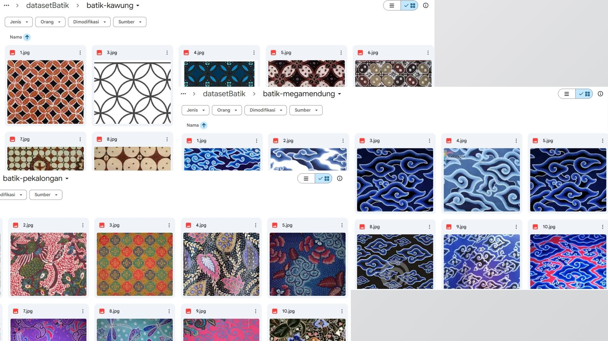
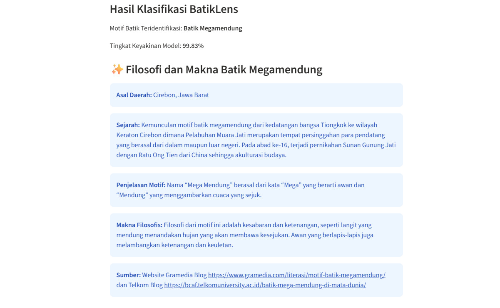

BatikLens
Digital Batik Recognition

The Problem
Indonesian batik has a wide variety of traditional motifs, each with its own origin and cultural meaning. However, people may find it difficult to identify different batik motifs and understand the cultural philosophy behind them. This creates an opportunity to use artificial intelligence to make batik recognition and cultural learning more accessible.
The Solution
BatikLens is an AI-powered web application designed to help users identify Indonesian batik motifs by uploading an image. Using a machine learning model, the application predicts the batik motif and provides information about its origin and cultural philosophy, making it easier for users to explore and appreciate Indonesia's cultural heritage through technology.
The Impact & Key Learnings
BatikLens demonstrates how artificial intelligence can be applied to support cultural education and promote awareness of Indonesia's traditional batik motifs. By combining image classification with information about each motif's origin and cultural philosophy, the application provides an accessible way for users to explore and learn about Indonesian cultural heritage.
- Hands-on experience in preparing image datasets and developing a batik classification model using MobileNetV2.
- Learned to integrate an AI model into a web application using Streamlit.
- Improved understanding of how AI can be used to support cultural education and preserve Indonesian heritage.
Project Gallery & Architecture

